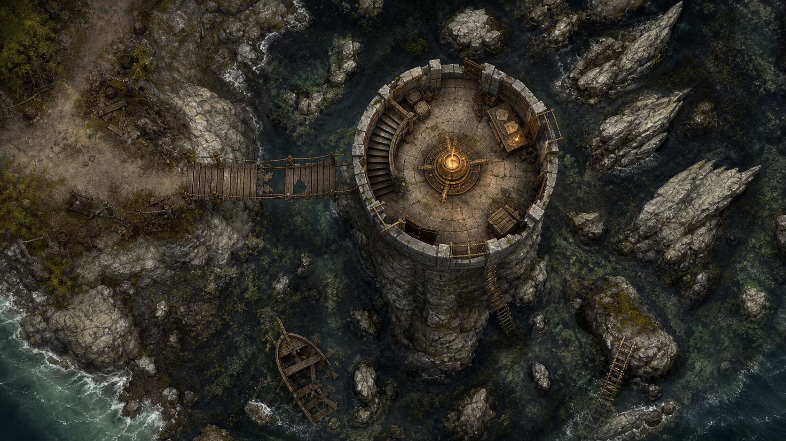
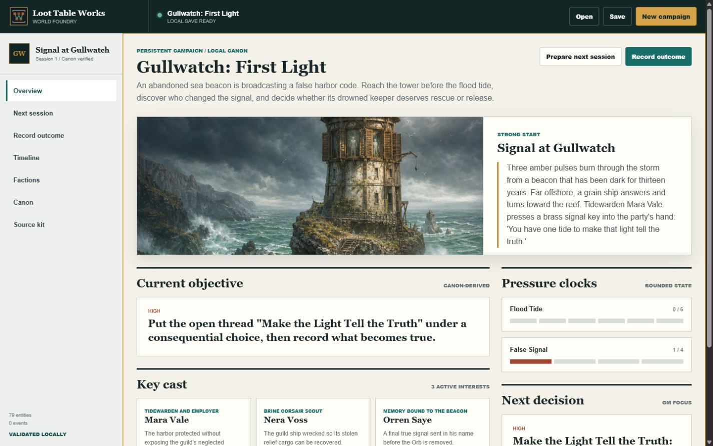

Run Gullwatch Beacon
Use a complete one-shot with maps, handouts, tokens, scaling, and a GM run sheet.
Open the free kitSystem-neutral GM field guide
Choose one urgent promise, prep only what can reach play, then carry the ending into next week with five portable campaign facts.
The complete loop
A useful one-shot is not a compressed campaign. It is one location, one pressure that visibly worsens, and one decision whose consequences survive the final scene.
Write the location, visible threat, deadline, and final decision in four sentences. Remove any scene that does not increase pressure, reveal a choice, or change the ending.
Read the opening. Mark the pressure tracks. Review the map, clues, and likely profiles. Translate rules only for threats that can appear tonight.
Put the party at the location with the first consequence in motion. Show the clock and let the players decide how they engage.
Capture the ending truth, changed relationship, advanced pressure, unresolved promise, and next player intention. Do not rewrite the session as prose.
Choose the strongest unresolved pressure, one affected relationship, and one new threat. That is the next-session brief.

Worked example
An abandoned sea beacon is broadcasting a false harbor code. Flood tide closes the route while the signal draws ships toward the rocks. The free kit supplies the adventure, GM run sheet, maps, handouts, tokens, scaling guidance, and consequences.
If you have one hour
Spend preparation time on decisions the players can reach. Stop when the clock runs out; the workflow is designed to prevent invisible prep from expanding.
After the final scene
Campaign Workspace imports a Campaign Start, records atomic session outcomes, preserves faction and pressure state, and generates a deterministic next-session brief. It runs locally without hosted storage or background analytics.

Choose your starting point
Every path is free and browser-based. The $3 modules below are optional expansions for GMs and creators who need more reusable data after the first session.
Use a complete one-shot with maps, handouts, tokens, scaling, and a GM run sheet.
Open the free kitGenerate a five-scene packet with linked characters and a direct Campaign Start export.
Open One-Shot ForgeRecord the session, save locally, export portable state, and prepare the next brief.
Open Campaign WorkspaceOptional world expansions
The one-shot and continuity workflow are complete without a purchase. These focused $3 modules expand the location, objectives, and rewards when the campaign moves beyond Gullwatch.
180 three-phase encounters with objectives, hazards, and alternate resolutions.
240 staged quests with concrete objectives, consequences, and reward links.
2,000 reward records for probability-backed outcomes and recurring threats.
Loot Table Works content is original, system-neutral, AI-assisted, and human-reviewed. It is not affiliated with or endorsed by any tabletop game publisher or virtual tabletop platform. Translate profiles with rules your group is authorized to use. The public tools require no hosted account, paid infrastructure, or background analytics.